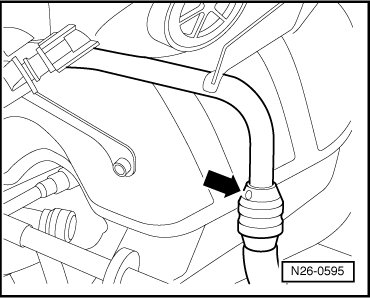

Combination Valve, Checking
Diagnostic Procedures
Combination Valve, Checking
Special tools, testers and auxiliary items required
• Hand Vacuum Pump (VAG1390)
Test requirements
• No leaks in vacuum lines or hose connections.
• Vacuum hoses not clogged or kinked
• Pressure and intake hose for Secondary Air Injection (AIR) Pump Motor not clogged or kinked.
• Ignition switched off.
Test sequence
- Disconnect vacuum hose from Secondary Air Injection (AIR) Solenoid Valve (N112) at combination valve (arrow).

- Connect hand vacuum pump ((VAG1390)) to vacuum connection of combination valve (arrow).

• Do not use pressurized air for the following test!
- Disconnect pressure hose (arrow) from Secondary Air Injection (AIR) Pump Motor (V101) at pressure line.

- Attach assisting hose onto pressure line and blow into with light pressure.
Combination valve must close.
- Operate vacuum pump.
Combination valve must open.
If the combination valve does not open or it is constantly open:
- Replace combination valve.
Final Procedures
After the repair work, the following work steps must be performed in the following sequence:
1. Check the DTC memory. Refer to --> [ Diagnostic Mode 03 - Read DTC Memory ] Diagnostic Modes 01 - 09.
2. If necessary, erase the DTC memory. Refer to --> [ Diagnostic Mode 04 - Erase DTC Memory ] Diagnostic Modes 01 - 09.
3. If the DTC memory was erased, generate readiness code. Refer to --> [ Readiness Code ] Monitors, Trips, Drive Cycles and Readiness Codes.